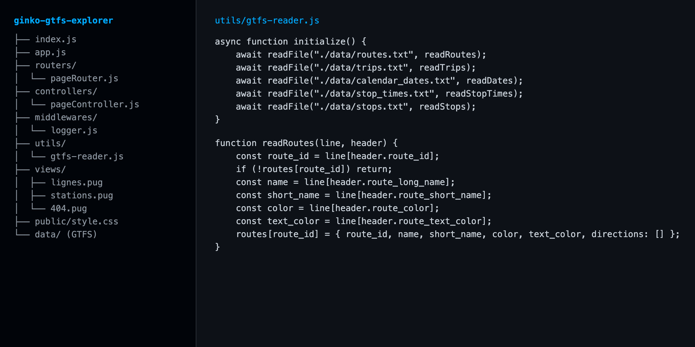

Serveur web Node.js / Express qui lit les données ouvertes GTFS du réseau de bus et tram Ginko de Besançon et les affiche sous forme de pages HTML générées avec Pug. Projet réalisé dans le cadre du cours de développement web de L3 Informatique (semestre 5), à partir d'une base fournie par l'enseignant.
readline) des fichiers GTFS : lignes, voyages, calendrier, horaires et arrêts.env/lignes : lignes du réseau avec leurs couleurs officielles et leurs directions/stations : liste des stations par ordre alphabétique/routes : données des lignes au format JSONLes fichiers GTFS sont lus dans l'ordre, ligne par ligne, pour ne pas charger en mémoire le fichier des horaires qui contient plus de 500 000 lignes.

app.js : configuration Express (moteur Pug, middlewares, routes, gestion des erreurs 404 et 500)routers/ et controllers/ : définition des URL et préparation des données pour les vuesmiddlewares/logger.js : journal des requêtes reçuesutils/gtfs-reader.js : lecture et indexation des fichiers GTFSviews/ : gabarits PugLe code est disponible sur GitHub :
Voir sur GitHub